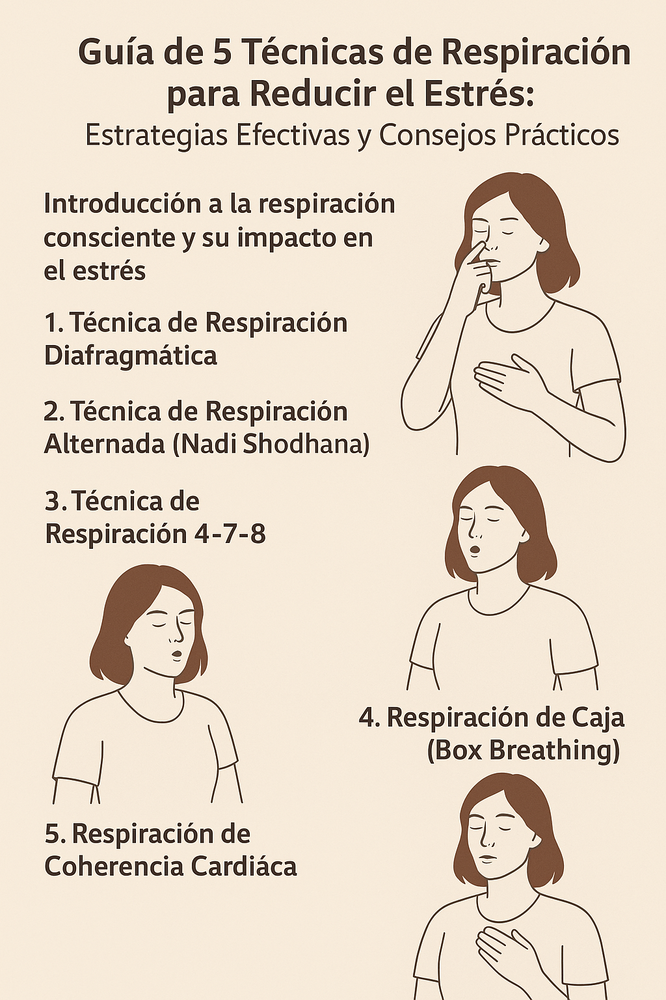

Guía de 5 Técnicas de Respiración para Reducir el Estrés: Estrategias Efectivas y Consejos Prácticos
Introducción a la respiración consciente y su impacto en el estrés
En un mundo cada vez más acelerado, aprender a controlar la respiración se ha convertido en una herramienta esencial para reducir la ansiedad y el estrés. La Guía de 5 Técnicas de Respiración para Reducir el Estrés ofrece métodos prácticos y efectivos para reconectar con uno mismo, calmar la mente y equilibrar el cuerpo.
Respirar es algo que damos por hecho, pero cuando aprendemos a hacerlo de forma consciente, se convierte en una poderosa técnica de autocuidado. Desde estudiantes hasta profesionales, todos podemos beneficiarnos de dedicar unos minutos al día a respirar bien.
¿Por qué la respiración es clave para el bienestar emocional?
La respiración no solo oxigena nuestro cuerpo, sino que influye directamente en nuestro sistema nervioso. Al regularla, podemos activar la respuesta de relajación, reduciendo la producción de cortisol, la hormona del estrés. Practicar estas técnicas nos permite manejar situaciones de tensión con mayor serenidad.
Beneficios científicos de las técnicas de respiración
Numerosos estudios respaldan la eficacia de la respiración controlada para bajar la frecuencia cardíaca, mejorar la concentración y promover la claridad mental. Incluso se ha demostrado que ayuda a conciliar el sueño y disminuir la presión arterial.
Relación entre respiración, mente y cuerpo
El cuerpo y la mente están profundamente conectados. Respirar lento y profundo envía señales al cerebro para calmarse. Esta conexión es la base de disciplinas como el yoga y la meditación, que usan la respiración como ancla para regresar al momento presente.
Preparación antes de practicar las técnicas de respiración
Ambiente ideal para la práctica
Busca un lugar tranquilo, sin distracciones, preferiblemente con buena ventilación. Puedes ambientar con música suave o velas aromáticas, pero no es indispensable.
Postura y concentración adecuada
Adopta una postura cómoda, preferiblemente sentado con la espalda recta. Cierra los ojos si lo deseas y enfoca tu atención en el aire entrando y saliendo de tus pulmones.
1. Técnica de Respiración Diafragmática
Paso a paso para realizarla correctamente
- Coloca una mano en el pecho y otra en el abdomen.
- Inhala profundamente por la nariz durante 4 segundos, asegurándote de que tu abdomen se expanda.
- Exhala lentamente por la boca durante 6 segundos.
- Repite de 5 a 10 minutos, sintiendo cómo se relaja tu cuerpo.
Errores comunes a evitar
Evita encorvarte o tensar los hombros. La respiración debe ser suave, sin forzar el aire. Si respiras solo con el pecho, corrige la postura y vuelve a intentarlo.
2. Técnica de Respiración Alternada (Nadi Shodhana)
Origen y fundamentos
Proveniente del pranayama, Nadi Shodhana significa “purificación de los canales”. Se cree que limpia la energía bloqueada y aporta claridad mental.
Cómo practicar la respiración alternada
- Siéntate cómodo con la espalda recta.
- Usa el pulgar derecho para tapar la fosa nasal derecha.
- Inhala por la izquierda.
- Cierra la fosa izquierda con el anular y exhala por la derecha.
- Inhala por la derecha, tapa y exhala por la izquierda.
- Repite de 5 a 10 ciclos.
3. Técnica de Respiración 4-7-8
Explicación y beneficios
El patrón 4-7-8 consiste en inhalar, sostener y exhalar siguiendo tiempos específicos. Este ritmo ayuda a desacelerar la respiración y a inducir un estado de relajación profunda, ideal para dormir mejor o aliviar momentos de ansiedad.
Guía práctica para principiantes
- Siéntate o recuéstate en una postura cómoda.
- Cierra los ojos y coloca la punta de la lengua detrás de los dientes frontales superiores.
- Inhala por la nariz contando hasta 4.
- Mantén la respiración contando hasta 7.
- Exhala completamente por la boca contando hasta 8.
- Repite este ciclo de 4 a 8 veces.
4. Respiración de Caja (Box Breathing)
Cómo funciona esta técnica militar
Se llama respiración de caja porque cada fase (inhalar, sostener, exhalar y mantener) dura el mismo tiempo, formando “lados” de igual longitud.
Instrucciones detalladas
- Siéntate con la espalda recta.
- Inhala profundamente por la nariz durante 4 segundos.
- Mantén la respiración durante 4 segundos.
- Exhala por la boca durante 4 segundos.
- Quédate sin inhalar 4 segundos.
- Repite de 5 a 10 minutos.
5. Respiración de Coherencia Cardíaca
Qué es y cómo ayuda a reducir el estrés
La coherencia cardíaca sincroniza la respiración y el ritmo cardíaco, equilibrando emociones y aumentando la claridad mental.
Aplicación diaria de la técnica
- Siéntate cómodamente y cierra los ojos.
- Inhala lentamente por la nariz durante 5 segundos.
- Exhala suavemente por la boca durante 5 segundos.
- Mantén este ritmo durante al menos 5 minutos.
- Practica dos o tres veces al día para mejores resultados.
Cómo combinar las técnicas para resultados óptimos
Puedes alternar las técnicas según tus necesidades. Por ejemplo, la respiración diafragmática es ideal para iniciar el día, la alternada para pausas cortas, y la 4-7-8 para dormir mejor.
Un consejo útil es establecer horarios: practicar una técnica por la mañana, otra después de almorzar y otra antes de dormir. Así conviertes la respiración consciente en un hábito diario.
Errores frecuentes al practicar respiración consciente
- Falta de constancia: Los beneficios reales se sienten con la práctica regular.
- Tensión corporal: Es importante mantener hombros, cuello y mandíbula relajados.
- Forzar la respiración: Evita hiperventilar; la respiración debe ser natural y sin prisa.
- Ambiente inadecuado: Busca un lugar tranquilo y sin interrupciones.
Consejos para mantener la constancia y la motivación
- Programa recordatorios en tu móvil.
- Asócialo con actividades diarias: por ejemplo, practicar mientras esperas el café.
- Utiliza aplicaciones de meditación guiada.
- Registra tu progreso en un diario.
- Practica en grupo o con un amigo para motivarte.
Preguntas frecuentes sobre la Guía de 5 Técnicas de Respiración para Reducir el Estrés
1️⃣ ¿Cuánto tiempo debo practicar cada técnica? Con 5 a 10 minutos al día es suficiente, pero puedes prolongar si lo deseas.
2️⃣ ¿Puedo combinar varias técnicas en una sesión? Sí, es recomendable adaptarlas según el momento y tu nivel de estrés.
3️⃣ ¿Qué hago si me distraigo mientras practico? Es normal. Simplemente regresa tu atención a la respiración, sin juzgarte.
4️⃣ ¿Estas técnicas sustituyen la terapia? No. Son complementarias, pero no reemplazan la atención médica o psicológica profesional.
5️⃣ ¿Puedo enseñar estas técnicas a niños? Sí, de forma adaptada y supervisada. La respiración consciente es útil para todas las edades.
6️⃣ ¿Dónde puedo aprender más? Existen cursos de yoga, mindfulness y sitios especializados como Mindful.org para profundizar en la práctica.
Conclusión: Empieza hoy a respirar mejor y vivir sin estrés
La respiración consciente es una herramienta poderosa, gratuita y siempre disponible. Esta Guía de 5 Técnicas de Respiración para Reducir el Estrés te ofrece estrategias simples pero transformadoras para reconectar contigo mismo, calmar la mente y mejorar tu calidad de vida.
Empieza hoy. Toma una respiración profunda… y da el primer paso hacia una vida más serena y equilibrada.
